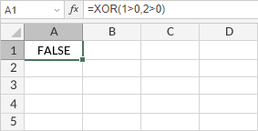

XOR funkcija
Funkcija XOR je jedna od logičkih funkcija. Koristi se za vraćanje logičkog ekskluzivnog Ili (XOR) za sve argumente. Funkcija vraća TRUE kada je broj TRUE ulaza neparan i FALSE kada je broj TRUE ulaza paran.
Sintaksa
XOR(logical1, [logical2], ...)
XOR funkcija ima sledeće argumente:
| Argument | Opis |
|---|---|
| logical1/2/n | Uslov koji želite da proverite da li je TRUE ili FALSE. |
Napomene
Možete uneti do 255 logičkih vrednosti.
Kako primeniti XOR funkciju.
Primeri
Postoje dva argumenta: logical1 = 1>0, logical2 = 2>0. Broj TRUE ulaza je paran, tako da funkcija vraća FALSE.

Postoje dva argumenta: logical1 = 1>0, logical2 = 2<0. Broj TRUE ulaza je neparan, tako da funkcija vraća TRUE.